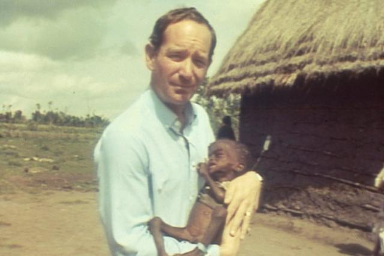
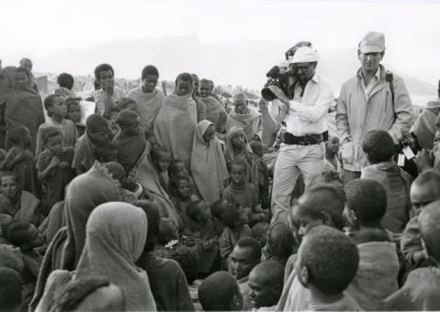

Ponto de Vista da SOFII
O Live Aid foi, talvez, o evento de captação de recursos mais bem sucedido da história e achamos que era hora de contá-lo. Com música ao vivo, apoio de celebridades e uma audiência mundial, Live Aid conseguiu arrecadar uma quantidade de dinheiro sem precedentes. Fazer um evento do tamanho do Live Aid pode estar além da maioria das nossas capacidades, mas o impacto de ter um pedido forte e convincente e poder atrair a imaginação de um público em massa são lições muito valiosas nos dias de hoje.
Área de atuação: Assistência internacional / desenvolvimento, pobreza / justiça social, benefício público e social
País: Reino Unido
Público alvo: Conscientização, indivíduos, doações únicas, campanha de transformação social, voluntariado
Meio de comunicação: Evento
Criador/Originador: Bob Geldof, Midge Ure e Harvey Goldsmith.
Resumo / Objetivos
O Live Aid foi um concerto de música realizado simultaneamente em Londres e na Filadélfia para arrecadar recursos, desde as venda de ingressos à doações diretas, para ajudar as vítimas da fome na Etiópia.
O evento precisou de apenas 12 semanas de planejamento e reuniu 58 bandas para tocarem música ao vivo durante 16 horas, em dois locais diferentes. Mais de 170 mil pessoas participaram presencialmente, foi transmitido ao vivo para o mundo através de 13 satélites e assistido por cerca de dois bilhões de pessoas.
No mesmo dia, inspirados pela iniciativa, concertos independentes também foram realizados em países como Austrália e Alemanha.
Histórico
O concerto foi idealizado como uma continuação ao Projeto Geldof/Goldsmith, do famoso single de caridade "Eles sabem o que é Natal?". Isso fez Geldof mobilizar o mundo pop em resposta a uma matéria que ele havia visto na BBC sobre a fome na Etiópia. O recorde foi realizado por uma coleção de atos musicais britânicos e irlandeses conhecidos como 'Band Aid' que foram lançados no inverno anterior. Na época, era o single mais vendido do Reino Unido e arrecadou cerca de £ 8 milhões.
Quando Geldof começou a aprender mais sobre a situação na África nos meses seguintes, ele descobriu que uma das principais razões pelas quais as nações africanas estavam em tal perigo era por causa do pagamentos dos empréstimos que seus países fizeram nos bancos ocidentais. Por cada libra doada, dez vezes mais teria que deixar o país em amortização dos empréstimos e assim ficou óbvio que uma música não seria suficiente.
Características Especiais
Além de ter sido uma das maiores transmissões via satélite e televisão de todos os tempos (seu rival mais próximo foi o casamento real do Príncipe Charles e Lady Diana quatro anos antes com miseráveis 750 milhões de espectadores), o Live Aid foi um fenômeno totalmente novo para o mundo da captação de recursos.
Live Aid não foi "caridade" no sentido tradicional da palavra. Para Geldof, ajudar as pessoas da África que estavam morrendo de fome era, sem dúvida, um motivo digno de fazer um evento tão incomum, mas não era puramente caridade, como explicou mais tarde: "Chamar de caridade me deixou louco. Para mim, foi uma política bem definida.”
Para as pessoas que foram ao concerto, ou estavam assistindo em suas televisões em casa, também não era caridade - ou, pelo menos, não pareceu. Foram as estrelas do pop, a cultura e a história em ação. Isso fez com que doar dinheiro para a África fosse tendência, muito longe do apelo usual.
Com dois bilhões de pessoas assistindo ao vivo em 160 países, as pessoas puderam compartilhar e participar do evento. Em um campo em Cheshire, 5.000 pessoas assistiram o show em uma grande tela erguida para a ocasião; Eles também passaram a tarde como uma comunidade, arrecadando doações coletivamente. Mas o evento foi além das comunidades locais, reuniu pessoas em todos os continentes, fazendo com que se sentissem parte de uma comunidade global: uma humanidade.
O Live Aid foi único porque algo assim nunca havia sido tentado antes. As pessoas ficaram presas pela curiosidade de tal evento, bem como pela compaixão em seus corações. Mesmo na época, o significado histórico do que Geldof estava fazendo ressoava em países e culturas de todo o mundo.
Influência / Impacto
O evento certamente teve impacto; Bob Geldof gritando ao vivo na BBC tem a tendência de permanecer na memória das pessoas e nos livros de história. Contra a crença popular, Geldof na verdade não disse: "Dê-nos a * do seu dinheiro", mas o que ele disse foi igualmente poderoso.
Ao saber que, depois de cinco horas, eles haviam levantado um milhão e meio de libras, sentou-se no sofá em frente à câmera e disse: "Há pessoas que estão morrendo agora, então doe o seu dinheiro." Para muitas pessoas, ter que pedir dinheiro é um pouco estranho e constrangedor, felizmente, Geldof não pensou assim.
O palavrão veio depois de seu pedido alarmante, quando o apresentador do programa insistiu que o endereço para o qual as pessoas doariam seu dinheiro aparecesse na tela antes de Geldof dizer o número para doar. Sabendo muito bem que as pessoas respondem imediatamente ao pedido de doação e quantidades significativas seriam levantadas naquele momento, ele dizia: “fod*** o endereço!”
Seja como for, o impacto das palavras de Geldof é inegável e provocou um aumento imediato nas doações.
Mas, embora as palavras infames de Geldof possam estar no topo dos momentos mais memoráveis ??do Live Aid, outra tática foi mais eficaz e roubou completamente o show, fazendo as pessoas doarem em níveis sem precedentes.
Um breve vídeo que mostrava as condições desesperadoeas que as famílias estavam enfrentando na África foi mostrado no final do set de David Bowie, que decidiu cortar uma de suas músicas para dar tempo do vídeo ser mostrado. As fotos de crianças famintas chocaram o mundo e lembraram o motivo pelo qual o evento estava sendo realizado. Imediatamente após a exibição do vídeo, as doações atingiram mais de £ 20.000 por minuto. Esses tipos de imagens tornaram-se sinônimo de pedidos de doação pela televisão, mas para o público do Live Aid em 1985, foi um momento inovador e o retorno obtido garantiu que a fórmula fosse usada várias vezes.
Resultados
Acredita-se que o objetivo inicial dos organizadores era arrecadar £ 1 milhão. O valor final levantado no Live Aid foi estimado em cerca de £ 150 milhões
Outras informações relevantes
Em 2005, Bob Geldof e Midge Ure anunciaram o Projeto Live 8. Baseado na premissa original do Live Aid, da cultura pop impactando na política. Concertos ao vivo foram organizados em cidades do mundo industrializado, incluindo Londres, Paris, Berlim, Roma, Filadélfia, Tóquio, Moscou, Joanesburgo e, finalmente, Edimburgo, para coincidir com o G8, cúpula econômica dos líderes mundiais em Gleneagles.
Ao contrário do Live Aid, esses concertos não foram destinados a captar recursos, mas a conscientizar sobre questões que afligem a África, incluindo dívidas governamentais, barreiras comerciais, fome e AIDS. Os concertos foram gratuitos, embora cerca de £ 2,5 milhões tenham sido levantados através de uma loteria por mensagens de texto para conseguir ingressos.
Cerca de 1,5 milhão de pessoas foram aos concertos e mais de 30 milhões se inscreveram. Seis dias depois, os participantes da Cúpula do G8 anunciaram o compromisso de fornecer uma ajuda adicional de £ 28,8 bilhões para a África, bem como medidas para ajudar na dívida, no comércio e na saúde.
Fotos:
No verão de 1985, o Estádio de Wembley foi palco do maior evento musical que o mundo já tinha visto. 72 mil pessoas estavam no local em um dia inesperadamente ensolarado de julho para ver uma formação cheia de estrelas, conhecida como "jukebox global". Com apresentações de David Bowie, Elton John, U2, The Who e Paul McCartney, os frequentadores foram cúmplices do que foi descrito mais tarde como "o melhor show na Terra", mas Geldof garantiu que ninguém esquecesse a verdadeira razão por trás desse evento épico.

Uma imagem icônica de Michael Burke segurando uma das crianças etíopes afetadas pela fome, tirada dos sete minutos e meio de reportagem do jornal das seis na BBC, no dia 24/10/1984. As fotos eram chocantes, mostrando sofrimento de proporções bíblicas. Bob Geldof chamou-o de jornalismo de confronto e não de jornalismo objetivo e falou de suas qualidades parecidas: "Eu desafio você a afastar-se, eu desafio você a não fazer nada." Foi ao ver essa reportagem que Geldof foi inspirado a agir.

Michael Burke e Mohammed Amin, cameraman talentoso que acompanhou Burke na viagem, retratados aqui entre alguns dos habitantes do norte da Etiópia. As fotos de Amin escancararam a paisagem seca, lotada de milhares de pessoas famintas e desoladas. Estas foram acompanhadas pela narrativa calma e digna de Burke, pontuada ocasionalmente por um silêncio trágico. Entre eles, Burke e Amin criaram uma transmissão única que desafiou e inspirou milhões a atos de enorme caridade e compaixão.
Para ler o caso diretamente no site da SOFII, clique aqui.